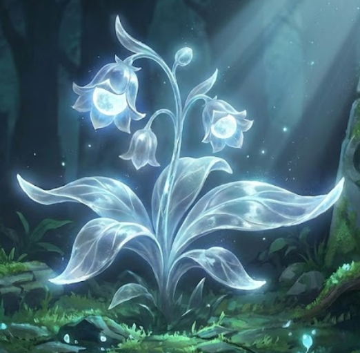
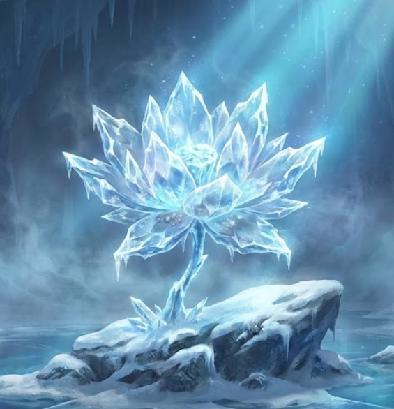
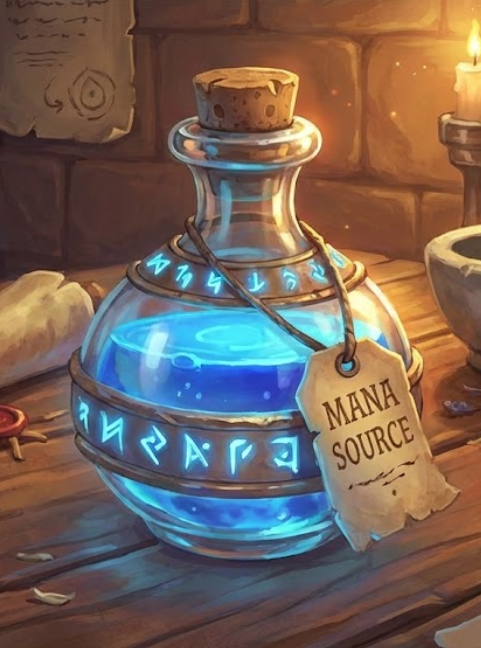

奇迹草药志 / SPECIMENS

MOONLIGHT GRASS
月光草
星辰 / AETHER
生长于碎星湖畔，能吸收并存储月光精华，是恢复系魔药的基础引子。

FROST LOTUS
冰晶莲
寒冰 / FROST
产自极北冰川，用于稳定剧烈的魔力反应，亦是制作御火药剂的关键。

PHOENIX ASH
凤凰羽毛灰烬
烈焰 / EMBER
源自火山之巅，提供强大的生命能量，为高阶复活药剂的灵魂素材。
✦
炼金仪轨 / RITUALS
I
研磨与萃取
使用星银研钵将原料研磨至粉末状，加入纯净以太溶液，低温萃取魔力液。
II
同调律动
维持火候在 180°C。持法杖进行魔力注入，使波动频率与施法者同步。
III
注入灵魂
当出现深紫色晶体时，投入灵魂石碎片。这是最危险的一步，慎防魔爆。
IV
冷却凝结
静置于月光下七个标准时，待药液完全澄清并稳定其魔力循环。
✦
传世魔药 / ARTIFACTS

永恒魔力源泉
吟唱缩短 50%，持续吸取大气以太。

真理视界药剂
看穿所有幻术与隐形单位，解读魔文。

巨龙体质合剂
体质提升至巨龙级，副作用是极度饥饿。